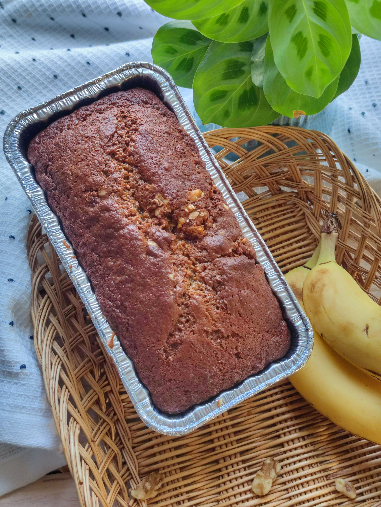

Home
Banana bread
Original recipe by Allrecipes. Link

Description
Not much needs to be said about banana bread, it's easy to make and tastes and smells great. It's a great snack option for large gatherings.
Ingredients
- 1 cup of white sugar
- ½ cup of butter
- 2 large eggs
- 1 teaspoon of vanilla extract
- 1 ½ cups of all-purpose flour
- 1 teaspoon of baking soda
- ½ teaspoon of salt
- ½ cup of sour cream
- ½ cup of chopped walnuts
- 2 medium sliced bananas
Steps
- Preheat oven to 350 degrees Fahrenheit / 175 degrees Celsius.
- Grease loaf pan.
- Stir sugar and butter together. Add eggs and vanilla, mix. Add flour, baking soda and salt, stir until smooth.
- Fold in banana slices, sour cream and walnuts. Transfer into loaf pan.
- Bake in oven for about an hour. You can use a toothpick to check if it's ready. It should come out clean after being inserted into the center of the loaf.
- Let the loaf cool down for 10 minutes in the pan. Then transfer onto a wire rack and let it cool down more.